Materialdossier: Frühmittelalter
Vollständiger Inhalt des Unterrichtsdossiers · Mittelalter_Frühmittelalter.docx
Das Mittelalter: Das frühe Mittelalter
Erbe und Neuanfang
Das «mittlere Zeitalter»
Der Begriff Mittelalter entstand als Epochenbezeichnung im 15. Jahrhundert. Damals sahen die Gelehrten ein neues Zeitalter anbrechen, das in der Bildung und Kunst zu den Wurzeln der Antike zurückkehrte. Die Epoche zwischen der Antike und der nun anbrechenden Neuzeit bezeichneten sie deshalb abwertend als «medium aevum», als «mittleres Zeitalter». Daraus entstand die bis heute gebräuchliche Einteilung der europäischen Geschichte in die Epochen Antike, Mittelalter und Neuzeit.
Die damals lebenden Menschen wähnten sich nicht im «Mittelalter», sie erkannten keinen Bruch zwischen der Antike und ihrer Zeit: Im Gegenteil, sie sahen sich in der Nachfolge des antiken Römischen Reiches. Für die theologischen Gelehrten der Zeit war das Römische Reich nach Babylon, Persien und Griechenland das letzte der vier Weltreiche. Nach seinem Untergang würde das Ende aller Zeiten kommen und das Jüngste Gericht den Übergang in eine neue, gerechte Welt im Jenseits schaffen.
Dennoch verwendet die heutige Geschichtswissenschaft den Begriff «Mittelalter» nach wie vor. Sie versteht ihn aber längst nicht mehr als «dunkle Zwischenzeit» zwischen zwei «helleren», «höherwertigeren» Epochen. Vielmehr betont sie die kulturellen und politischen Leistungen des Mittelalters und beschreibt nicht nur die Brüche zwischen der vorhergehenden und nachfolgenden Epoche, sondern auch die Kontinuitäten, etwa in der christlichen Religion, in der romanischen Sprache, im Recht, in der Philosophie und in der Naturlehre.
Dementsprechend werden heute die Übergänge von der Antike zum Mittelalter und vom Mittelalter zur Neuzeit nicht mehr als abrupte Brüche, sondern als längere Zeiträume betrachtet. Der Beginn des Mittelalters wird zwischen dem 4. und dem frühen 7. Jahrhundert angesetzt, das Ende des Mittelalters zwischen 1400 und 1550. Das Mittelalter selbst wird wiederum häufig in drei Phasen unterteilt: das Frühmittelalter von rund 500 bis etwa 1000, das Hochmittelalter von 1000 bis 1250 und das Spätmittelalter von 1250 bis zum Ende der Epoche.
Schliesslich verwenden viele Historikerinnen und Historiker den Begriff Mittelalter nur für das Gebiet des ehemaligen Weströmischen Reiches und für Nordeuropa. Für das ehemalige Oströmische Reich, das spätere Byzanz und die ganze übrige Welt, zum Beispiel den arabischen Raum und China, wird diese Zeiteinteilung selten verwendet, da sich die Epochen und Übergänge dort meist anders entwickelt haben.
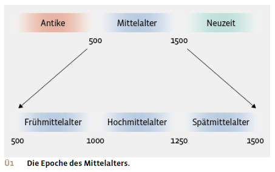
Dreiteilung der Mittelmeerwelt
Im 6. Jahrhundert gelang es dem oströmischen Kaiser Justinian noch einmal für kurze Zeit, ein umfassendes Römisches Reich über den gesamten Mittelmeerraum zu errichten. Dieses war jedoch nur von kurzer Dauer, und bereits im 7. Jahrhundert kam es zu einer Dreiteilung der Mittelmeerwelt.
Auf der Arabischen Halbinsel entstand der Herrschaftsbereich des Islam, der sich nach Osten bis weit nach Asien und nach Westen bis Nordafrika und später auch auf die Iberische Halbinsel ausdehnte. Das Oströmische Reich konnte sich trotz dieser islamischen Expansion behaupten und existierte in kleinerem Umfang als das ursprüngliche Ostrom als Byzantinisches Reich weiter. Auf dem Boden des Weströmischen Reiches entstanden mehrere kleinere Reiche, die von germanischen und anderen eingewanderten Gruppen beherrscht wurden.
Diese Gruppen waren durch Kriegszüge und durch Solddienste in der römischen Armee, aber auch durch Zuwanderung nach Westen und Süden gelangt und trafen dort auf eine christlich-römische Bevölkerung, die sowohl in Städten als auch auf dem Land lebte, ihre Landgüter aber teilweise wegen der unsicheren Lage aufgegeben hatte. Die neuen Gruppen vermischten sich nun teilweise mit dieser alteingesessenen Bevölkerung und es bildeten sich neue, eigenständige kulturelle Identitäten heraus.
Das politische Vakuum, das durch den Wegfall der römischen Herrschaft entstanden war, füllten die Eingewanderten durch die Gründung eigener Königreiche. So entstanden im heutigen England das Reich der Angeln und Sachsen, auf der Iberischen Halbinsel das Reich der Westgoten, in Italien die Reiche der Ostgoten und der Langobarden, im Rhone-Genfersee-Gebiet das Reich der Burgunder, im Norden Galliens das Reich der Franken und im Bodenseeraum das Reich der Alemannen.
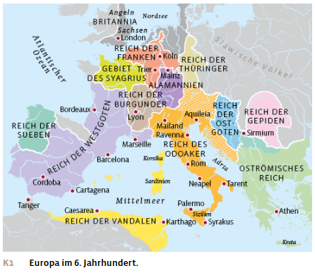
Der Aufstieg des Frankenreichs
Zu Beginn des 5. Jahrhunderts wanderten die Franken, eine germanische Gruppe, aus dem heutigen Mitteldeutschland in den Nordosten Galliens ein, wo sie mehrere kleine Königreiche errichteten. Unter der Führung von König Chlodwig, der aus dem fränkischen Geschlecht der Merowinger stammte, wandten sich die Franken gegen den römisch-keltischen Heerführer Syagrius, der über grosse Teile Galliens herrschte, und besiegten ihn. Chlodwig vereinigte daraufhin die fränkischen Teilreiche zu einem einheitlichen Reich. Dieses erweiterte er durch weitere Feldzüge im Südwesten nach Aquitanien bis an die Pyrenäen und im Osten nach Alamannien bis ins heutige Süddeutschland. Chlodwig herrschte nun über ein grosses Reich, das seine Söhne noch um das damalige Burgunderreich im heutigen Südostfrankreich vergrösserten. Im Westen bestand dieses Reich vorwiegend aus einer römisch-keltischen Bevölkerung, östlich von Rhein und Aare aus einer germanischen Bevölkerung.
Um seine Herrschaft zu festigen, näherte sich Chlodwig der christianisierten römisch-keltischen Oberschicht an. So liess er sich etwa vom Bischof von Reims christlich taufen. Dieser Glaubenswechsel war von entscheidender Bedeutung für die weitere Entwicklung hin zu einem christlichen Europa. Die merowingischen Könige galten fortan als «rex et sacerdos», als König und Priester. Sie stellten sich damit in die Tradition der christlichen Kaiser des Römischen Reiches.
Chlodwig und seine Nachfolger verstanden sich als Beschützer der Christenheit und fühlten sich auch befugt, kirchliche Gremien und Versammlungen einzuberufen, um das religiöse Leben verbindlich zu regeln. Die fränkischen Herrscher setzten auch die Bischöfe ein, die diese Beschlüsse umzusetzen hatten. Als weltliche Herrscher wurden sie so auch zu den Schirmherren der Kirche.
Indem sich Chlodwig die Unterstützung der Kirche und der romanischen Oberschicht sicherte, gewann die fränkische Herrschaft eine breitere Basis, die den anderen germanischen Reichen fehlte. So konnten die fränkischen Könige, die über keinen eigenen Verwaltungsapparat verfügten, durch die Zusammenarbeit mit der Kirche auf die bestehenden Verwaltungsstrukturen der Bischofsstädte und Klöster zurückgreifen und damit auch deren lateinische Sprache und Schriftlichkeit nutzen. Dies stärkte und stabilisierte das fränkische Reich.
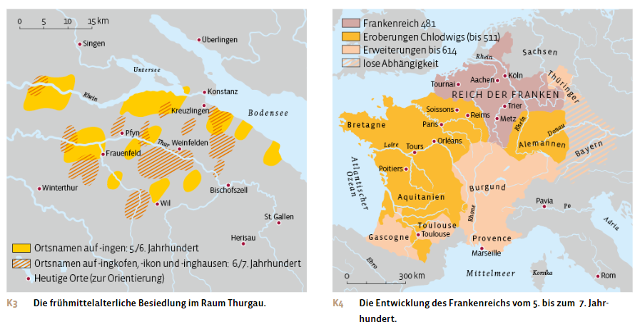
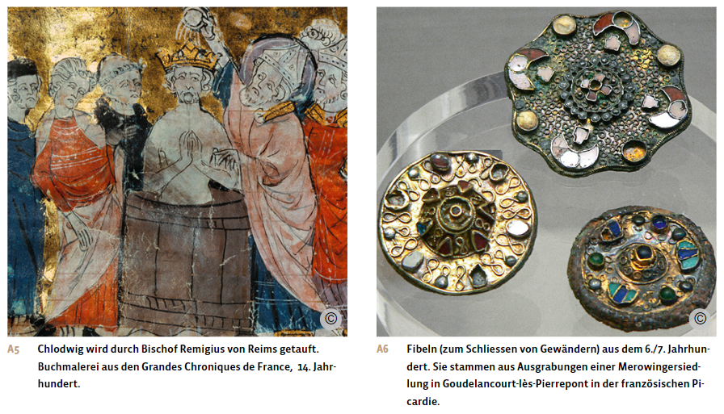
Die Christianisierung der germanischen Bevölkerung
Frühes Mönchtum und Missionierung
Die Verbindung des christlichen Glaubens mit dem fränkischen Königshaus förderte die Durchsetzung des Christentums in Europa. Auch im keltischen und germanischen Raum wurde das Christentum nun zur vorherrschenden Religion, wobei die Missionstätigkeit der Klöster eine grosse Rolle spielte.
Ziel einer klösterlichen Gemeinschaft ist es, dass sich Männer und Frauen ungestört «von der Welt» in Gebet, Meditation und Arbeit der Ausübung ihres christlichen Glaubens und dem Gebet für das Seelenheil der Menschen widmen können. Vorbild für diese Gemeinschaften war das im Neuen Testament überlieferte Leben von Jesus und seiner zwölf Jünger. Die ersten Klöster entstanden bereits in der Spätantike in Ägypten und in Syrien. Vom Nahen Osten aus beeinflussten diese Klostergemeinschaften auch das Christentum im Westen.
Um 400 entstand im Südosten des heutigen Frankreichs eine starke Mönchsbewegung, ausgehend von einer Klostergemeinschaft auf der Insel Lérins vor Cannes. Von dort breitete sich eine Welle von Klostergründungen über das Rhonetal und den westlichen Jura bis in den Norden des heutigen Frankreichs aus. Darunter waren auch mehrere Frauenklöster.
Einen starken Einfluss auf die Christianisierung Europas hatte auch das frühe Mönchtum in Irland. Dort entstanden im 6. Jahrhundert mehrere grosse Klostergemeinschaften, deren Mönche eine rege Schriftkultur und Schreibtätigkeit pflegten und in strenger Askese lebten, das heisst, ein enthaltsames Leben mit langen Gebeten führten. Eine zentrale Aufgabe sahen die irischen Mönche in der christlichen Seelsorge und der Missionierung fernab ihrer Heimat. So zogen die irischen Mönche Kolumban und Gallus um 590 ins Frankenreich, wo der merowingische König ihre Missionstätigkeit begrüsste und unterstützte. Auf einer Insel an der Ostküste Englands gründeten irische Mönche das Kloster Lindisfarne. Von dort aus missionierten die Mönche im britischen Königreich der Angeln und Sachsen sowie im Frankenreich auf dem Kontinent. In England entstanden auch Frauenklöster, sodass bald englische Nonnen im Frankenreich missionierten und dort eigenständige Klöster gründeten.
Die Mönche verbreiteten das Christentum durch Predigt, Seelsorge und den Bau von Kapellen und Kirchen. Dies oft an Orten, wo sich zuvor germanische oder keltische Heiligtümer befunden hatten. Obwohl die Klöster und die Kirche mit Unterstützung der fränkischen Könige die Christianisierung vorantrieben und dabei auch die heidnischen germanischen Bräuche verboten, hielten sich diese im privaten Bereich noch lange. Vor allem im ländlichen und alpinen Raum wurde das Christentum im frühen Mittelalter oft nur oberflächlich angenommen und der germanische Götterglaube weiter praktiziert.
Die ersten Klostergründungen auf dem Gebiet der heutigen Schweiz gehen sowohl auf das Rhonemönchtum als auch auf das irische Mönchtum zurück: So wurden die Klöster Romainmôtier bei Orbe im Jahr 450 und St.Maurice im Wallis im Jahr 515 durch Mönche des Rhonemönchtum gegründet. Die Klöster Moutier-Grandval um 640 und St.Gallen im Jahr 719 sind dagegen Gründungen der irischen Missionare Kolumban und Gallus.
Auch in Italien, vor allem in der Gegend um Rom, entstanden bereits in der Spätantike erste Klostergemeinschaften, von denen weitere Gründungen ausgingen. Dazu gehörte das Kloster in Subiaco bei Rom, dessen Vorsteher Benedikt von Nursia war. Später gründete er ein weiteres Kloster in Montecassino bei Neapel. Um 530 schuf er eine neue Klosterregel, die Benediktsregel, die zur Grundlage des Benediktinerordens wurde. Seine Regel wurde um 600 vom Papst, dem Bischof von Rom, gefördert und 816 für alle Klöster im Frankenreich als verbindlich erklärt.
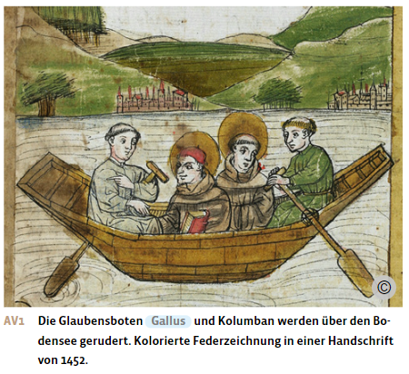
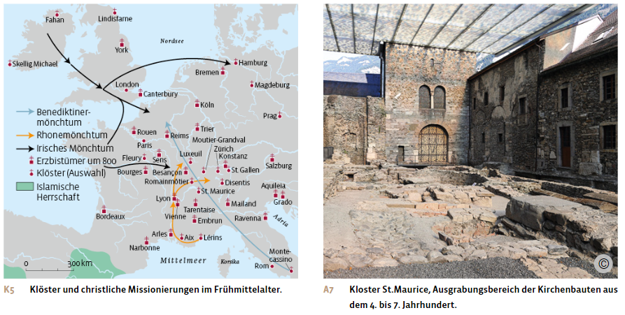
Die Funktionen der Klöster
In der Folge wurde die Benediktsregel zur wichtigsten Klosterregel Europas. Ihr Kerngedanke war, dass die Mönche beteten und arbeiteten. Täglich sollten über den Tag verteilt acht gemeinsame Chorgebete gehalten werden. Unter Arbeit verstand man sowohl körperliche Arbeit in der Landwirtschaft oder im Klostergarten als auch die Arbeit in den Skriptorien, den Schreibstuben der Klöster.
Mit der wachsenden Zahl von Klöstern und Kirchen im Frühmittelalter stieg auch der Bedarf an Bibeln und liturgischen Texten für die Gottesdienste. Damit wuchs die Bedeutung der Skriptorien: Vor allem in den grösseren Klöstern entstand in der Folge eine hochentwickelte Buchkultur, in der die Mönche religiöse Texte durch Abschreiben auf Pergament vervielfältigten. So sollen im Kloster St.Gallen um 780 bereits rund 60 Mönche als Schreiber tätig gewesen sein. Das Kloster, das 747 die Benediktsregel eingeführt hatte, entwickelte sich zu einem wichtigen kulturellen Zentrum im südlichen Bodenseeraum. Ein St.Galler Bibliothekskatalog aus dem 9. Jahrhundert verzeichnet neben zahlreichen Büchern für den kirchlichen Alltag weitere 294 Titel zu Studienzwecken. Neben geistlichen Texten finden sich darunter auch Werke nicht-christlicher antiker Autoren, wie beispielsweise Aristoteles, Vergil oder Ovid. Ohne die frühmittelalterlichen Abschriften und die Aufbewahrung in den Klosterbibliotheken wären viele antike Texte nicht überliefert worden.
Überliefert ist auch der um 825 entstandene Klosterplan von St.Gallen. Es handelt sich vermutlich nicht um einen ausgeführten Bauplan, sondern um eine Planungsgrundlage, eine Art Musterbauplan einer idealen Klosteranlage der damaligen Zeit. Im Zentrum des Plans sind neben der Klosterkirche der Kreuzgang mit Dormitorium, dem Schlafsaal, und dem Refektorium, dem Speisesaal, eingezeichnet. Darum herum befinden sich zahlreiche weitere Einrichtungen, die den Gästen und den Novizen, den zukünftigen Mönchen, aber auch der Klosterwirtschaft dienten, wie zum Beispiel Back- und Brauhäuser und Gärten für Küchen- und Heilkräuter. Der Plan zeigt, wie die Klöster im frühen Mittelalter nicht nur geistliche, sondern auch wichtige wirtschaftliche und kulturelle Funktionen erfüllten. Die Förderung von Klostergründungen durch die fränkischen Könige hatte nicht nur religiöse, sondern auch wirtschaftliche und machtpolitische Ziele. So erschlossen die fränkischen Könige mit der Gründung von Klöstern neue Gebiete für die landwirtschaftliche Nutzung und schufen eine Art politische Verwaltungszentren. Damit dienten die Klöster auch der Erweiterung oder Sicherung des fränkischen Herrschaftsgebiets. Klöster wurden daher oft an wichtigen Passrouten oder Geländeübergängen gegründet. So unterstützte der fränkische König etwa das Kloster Luxeuil südlich der Vogesen durch die Vergabe von Land und Bauern, um sich die Verbindung zwischen Burgund und dem Rheingebiet zu sichern. Das Kloster Moutier-Grandval wiederum wurde an einer Passroute über den Jura errichtet. Die Klöster Disentis, Pfäfers und Müstair entstanden an wichtigen Alpenübergängen.
Wie eng herrschaftspolitische und religiöse Aspekte bei Klostergründungen miteinander verbunden waren, zeigt auch die Gründung der Klosters Fraumünster in der Stadt Zürich. Der ostfränkische König Ludwig der Deutsche stiftete dort das Fraumünster im Jahr 853 persönlich. Er stattete es reich mit Land und Bauern aus, setzte seine Tochter Hildegard als Äbtissin ein und sicherte sich so Einfluss in der Stadt und im Umland Zürichs.
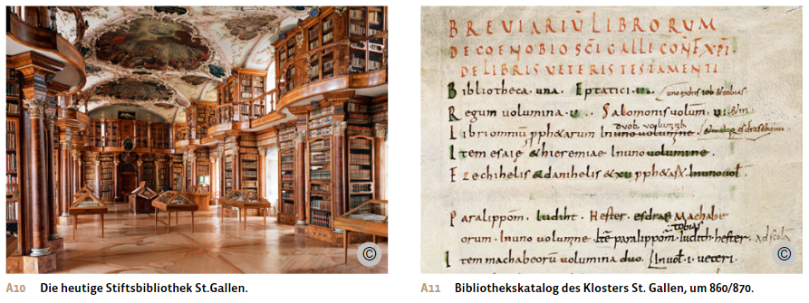
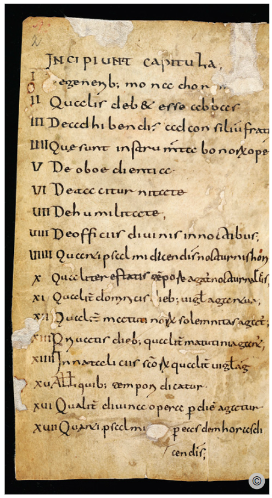
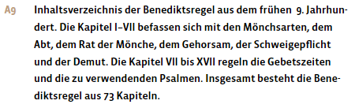
Bischofssitze und Papst
Wichtige Stützen des Christentums und der schriftlichen Überlieferung waren auch die Bischofssitze, die nach dem Ende des Weströmischen Reiches als kirchliche Verwaltungs- und Leitungsorgane fortbestanden.
Die ersten Bischofssitze auf dem Gebiet der heutigen Schweiz entstanden noch in der Spätantike ab dem 4. Jahrhundert in Augusta Raurica, Vindonissa und Martigny, später auch in Genf und Chur. Als ab dem 6. Jahrhundert die Alemannen von Nordosten her das Mittelland besiedelten, verlegten die Bischöfe ihren Sitz von Vindonissa nach Aventicum, dem heutigen Avenches, und später nach Lausanne. Der Bischofssitz von Augusta Raurica wechselte nach Basel, derjenige von Martigny nach Sion. Diese Verlegungen lassen darauf schliessen, dass im 6. Jahrhundert in einigen Städten noch eine christliche romanische Bevölkerung lebte, während sich auf dem Land die nicht-christliche alemannische Landbevölkerung ansiedelte. Dies änderte sich, als im 7. Jahrhundert die christianisierten Franken die alemannischen Gebiete eroberten. In Konstanz wurde daraufhin ein neues Bistum gegründet und die Region durch irische Mönche missioniert.
In diesem frühen fränkischen Reich übernahmen die Bischöfe auch weltliche Aufgaben, die zuvor von der römischen Verwaltung wahrgenommen worden waren. So wurden die Bischöfe zu den eigentlichen Stadtherren, etwa in Köln, Strassburg, Basel oder Chur. Sie kümmerten sich beispielsweise um die Armenfürsorge, um das Eintreiben von Steuern, den Bau von Stadtmauern und Wasserleitungen und waren sogar für die Verteidigung der Städte zuständig. Damit wurden die Bischöfe zu wichtigen Partnern der fränkischen Könige, die dazu übergingen, die Bischöfe nach Möglichkeit selbst zu ernennen und dabei Mitglieder aus königstreuen Familien auszuwählen.
Gegenüber den anderen Bischöfen nahm der Bischof von Rom eine Sonderstellung ein. Bereits seit dem 3. Jahrhundert liessen sich die dortigen Bischöfe als Papst, als väterliches Oberhaupt, anreden und beanspruchten damit eine besondere Vorrangstellung gegenüber den anderen Bischöfen. Begründet wurde dies damit, dass der Bischof von Rom der Überlieferung nach der Nachfolger des Apostels Petrus sei, der seinerseits als der Stellvertreter von Jesus Christus die Christenheit geleitet habe. Viele Bischöfe und die ganze Kirche im oströmischen Reich lehnten diesen Anspruch jedoch ab, da es nach ihrem Verständnis keine Hierarchie unter den Bischöfen gab. Dies führte unter anderem 1054 zur Spaltung der Christenheit in die griechisch-orthodoxe Ostkirche und die lateinische Westkirche.
Im Westen hingegen gelang es dem Papst, im Laufe der Zeit seinen Führungsanspruch gegenüber den anderen Bischöfen durchzusetzen. Einen wichtigen Schritt in diese Richtung unternahm Papst Gregor I., der um 600 von Rom aus die Beziehungen zu den fränkischen Königen intensivierte und so eine Vereinheitlichung des Gottesdienstes in seinem Sinne durchsetzen konnte.
Die Grundherrschaft
Einbruch des Handels
Als in der Spätantike das Weströmische Reich zerfiel und der Islam im südlichen Mittelmeerraum expandierte, kamen Fernhandel und Geldwirtschaft in grossen Teilen Europas zum Erliegen. Viele der einst prächtigen Städte schrumpften auf wenige Tausend Einwohner oder verschwanden ganz.
In Nordwest- und Mitteleuropa brach auch der lokale Handel vollständig ein. Die germanischen Königreiche waren von Instabilität, Bürgerkriegen und Erbstreitigkeiten geprägt, die eine wirtschaftliche Blüte nicht zuliessen. Die Menschen lebten fast ausschliesslich von der Selbstversorgung durch die Landwirtschaft. Mindestens 90 Prozent, wahrscheinlich sogar 95 Prozent der Bevölkerung waren Bauersleute.
Die Landschaft war zum grössten Teil von ausgedehnten Wäldern bedeckt, die nur von schwer zugänglichen Mooren und Sümpfen unterbrochen waren. Die wenigen Siedlungen lagen verstreut und bestanden meist aus Weilern oder kleinen Dörfern. Höhergelegene Gebiete wie Hügelgebiete, steilere Hanglagen oder Alpentäler waren im frühen Mittelalter noch kaum besiedelt. Die frühmittelalterlichen Quellen geben kaum oder nur indirekt Auskunft über die Bevölkerungszahlen. Schätzungen gehen davon aus, dass um das Jahr 600 in Westeuropa etwa 12 Millionen Menschen lebten, auf dem Gebiet der heutigen Schweiz etwa 250’000.
In Italien, Südfrankreich und Spanien blieben die meisten Städte als Herrschafts- und Verwaltungszentren – meist unter bischöflicher Führung – erhalten. Hier funktionierten die lokale Wirtschaft und der Handel in begrenztem Umfang weiter. Ein wichtiges Handelszentrum blieb auch die oströmische Hauptstadt Konstantinopel.
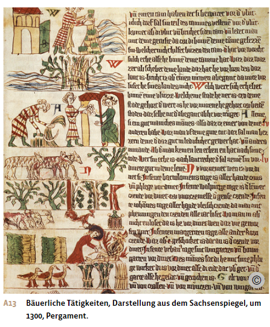
Die Entstehung grosser Hofverbände
Zu Beginn des Frühmittelalters lebte ein Teil der Bauern nach germanischer Tradition als freie Bauern. Sie besassen eigenes Land und waren zum Kriegsdienst verpflichtet. Mächtige Familien, der Adel, erhielten jedoch aufgrund ihrer militärischen Leistungen oder ihrer Nähe zum König grosse Ländereien und damit Zugang zu mehr Ressourcen und Einfluss als andere Gruppen. Auch die Kirchen und Klöster erhielten durch Schenkungen und königliche Unterstützung viel Land.
Die Folge war, dass viele freie Bauern im Laufe des Frühmittelalters ihr eigenes Land nicht behalten konnten und in Abhängigkeit gerieten: Oft wurden sie von mächtigen Adligen mit Gewalt in die Unfreiheit getrieben oder sie unterstellten sich zu ihrem eigenen Schutz selbst einem adligen oder auch geistlichen Landbesitzer, einem Bischof oder einem Kloster. Auch gingen Bauern in die Unfreiheit, um dem immer häufiger geforderten Kriegsdienst zu entgehen. So wuchs die Zahl der Unfreien, die von einem Grundherrn, einem Adligen, einem Bischof oder einem Kloster mit grossem Landbesitz abhängig waren und dafür dessen militärischen und rechtlichen Schutz genossen.
Dabei bildete sich im 7. Jahrhundert unter fränkischer Herrschaft ein neues Wirtschaftssystem heraus, welches das freie Bauerntum und die alten römischen Gutshöfe mit ihren Sklaven ablöste. Es entstanden Villikationen, Hofverbände, die aus einer zweiteiligen Grundherrschaft bestanden: dem Fronhof, der vom Grundherrn oder einem Verwalter selbst bewirtschaftet wurde, und den sogenannten Hufen, kleinen Höfen, die den Bauern zur Bewirtschaftung auf eigene Rechnung überlassen wurden.
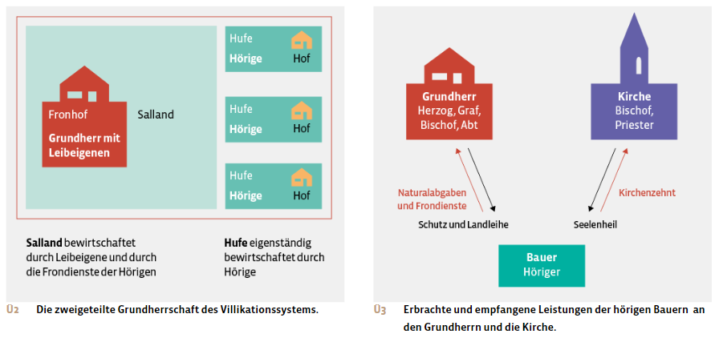
Der Fronhof mit Leibeigenen
Im Zentrum einer Grundherrschaft stand der Fronhof, der vom Grundherrn selbst oder von seinem Verwalter, dem Meier, durch Leibeigene bewirtschaftet wurde. Der Fronhof war das wirtschaftliche Zentrum des Hofverbandes. Ein Fronhof konnte beträchtliche territoriale Ausmasse annehmen, wenn es sich dabei um den Fronhof eines Königs, eines Herzogs, eines Bischofs oder eines Klosters handelte. Oft besassen mächtige Grundherren auch mehrere Fronhöfe, zum Teil sogar ein ganzes Fronhofsystem.
Zu einem grösseren Fronhof gehörten ein meist aus Stein errichtetes Herrenhaus, verschiedene Wirtschaftsgebäude wie Ställe, Scheunen und Vorratsgebäude sowie die landwirtschaftlichen Nutzflächen, das Salland. Dieses bestand vor allem aus Ackerland, Weiden, Wiesen und Obstgärten und wo möglich auch aus Weinbergen. Hinzu kamen Unterkünfte für die zum Hof gehörenden Bauern und Bäuerinnen, die Eigenleute. Diese waren Leibeigene und damit stark von ihrem Grundherrn abhängig. Sie unterstanden nicht nur seiner Strafgewalt und Vormundschaft, sondern waren auch sein Eigentum und stellten für ihn einen Vermögenswert dar. Bei einem Verkauf oder einer Schenkung des Hofes gingen sie mit Grund und Boden an den neuen Eigentümer über. Sie durften nur mit Zustimmung des Grundherrn heiraten oder vom Hof wegziehen. Der einzige Unterschied zur antiken Sklaverei bestand darin, dass die Sklavinnen und Sklaven rechtlich als Sachen angesehen wurden und über keinerlei Rechte verfügten, während die mittelalterlichen Leibeigenen einige, wenn auch sehr eingeschränkte, Rechte in Bezug auf Erbfähigkeit, Heirat und Freizügigkeit besassen. So durften beispielsweise Leibeigene innerhalb der Gruppe der Leibeigenen ihres Grundherrn heiraten.
Hufen mit Hörigen
Den zweiten Teil des grundherrschaftlichen Villikationssystems bildeten mehrere kleinere Höfe, die sogenannten Hufen oder Huben, die sich ebenfalls auf dem Land und damit im Eigentum des Grundherrn befanden.
Die Grösse der Hufen war so bemessen, dass sie von einer Bauernfamilie bewirtschaftet werden konnten und der Ertrag gerade zur Selbstversorgung ausreichte. Die Bauern auf den Hufen waren Hörige. Sie standen in einem engen persönlichen Abhängigkeitsverhältnis zum Grundherrn, hatten aber mehr Rechte als die Eigenleute auf dem Fronhof. Die Hörigen erhielten ihre Hufe zur Bewirtschaftung und mussten dafür einen Grundzins in Form von Naturalabgaben an den Grundherrn leisten sowie verschiedene Dienste auf dem Fronhof verrichten. Im Gegenzug genossen die Hörigen den militärischen Schutz des Grundherrn, durften auf dessen Grund und Boden leben und den Hof auf ihre eigene Rechnung bewirtschaften.
Die Frondienste zugunsten des Grundherrn stellten für die Hufner eine zusätzliche Arbeitsbelastung dar. Sie bestanden meist aus Pflug-, Saat-, Ernte- oder Transportdiensten auf dem Fronhof, konnten aber auch andere Tätigkeiten umfassen wie Brotbacken, Bierbrauen, Wegebau oder Zaunreparaturen. Während der Frondienste konnten die Bauern ihren eigenen Hof nicht bewirtschaften und mussten die anfallenden Arbeiten der Frau und den Kindern überlassen. So fehlten die Bauern oft bei der Ernte auf den eigenen Feldern, weil sie in dieser Zeit auf dem Fronhof beim Ernten helfen mussten.
In der Regel dauerten die Frondienste einige Tage im Frühling und im Herbst. In manchen Quellen finden sich aber auch deutlich höhere Angaben: So mussten etwa die hörigen Bauern des Klosters Muri um 1150 bis zu 260 Tage Frondienst leisten. Für den Grundherrn hatte die Fronarbeit den Vorteil, dass er den saisonal stark schwankenden Arbeitsanfall auf seinem Hof ausgleichen konnte: Vor allem in der Erntezeit konnte er so auf zusätzliche Hilfskräfte zurückgreifen.
Im Gegensatz zu den Leibeigenen waren die Hörigen nicht persönliches Eigentum des Grundherrn und konnten ihren Hof selbst bewirtschaften. Ihre Abhängigkeit definierte sich über den Boden, den sie zur Bewirtschaftung erhielten. Es handelte sich um eine dingliche Bindung an den Grundherrn: Die Hörigen gehörten zum Grund und Boden und konnten vom Grundherrn zusammen mit dem Land verschenkt oder verkauft werden, aber im Gegensatz zu den Leibeigenen konnten sie nicht vertrieben werden. Die hörigen Bauern waren also an die Scholle, das Land, gebunden. Dadurch liefen die Bauern aber auch nicht in Gefahr, ihre karge Existenzgrundlage zu verlieren. Hörigen war es zudem möglich, das Land mehrerer Grundherren zu bewirtschaften und so ihre Existenzgrundlage zu erweitern. Beim Tod eines Hörigen verblieb die Hufe in der Regel in dessen Familie. Der Grundherr war nicht erbberechtigt, der Hof fiel nicht an ihn zurück. Er hatte aber beim Tod eines Hörigen Anspruch auf das Besthaupt oder das Bestkleid, also das beste Stück Vieh oder das beste Kleid der verstorbenen Person. Zum Teil wurde auch nur das Zweithaupt, das zweitbeste Tier, beansprucht und das beste Stück den Nachkommen überlassen
Bäuerlicher Alltag
Das Leben der hörigen Bauernfamilien blieb karg und bescheiden. Bis zu einen Viertel der Ernte mussten sie als Naturalabgabe an den Grundherrn entrichten. Auch den wenigen verbliebenen freien Bauern ging es kaum besser. Wie die Hörigen hatten auch sie den Zehnten abzuliefern, eine Abgabe an die Kirche für deren Bemühungen um das Seelenheil. Zudem mussten alle Bauern einen Teil der Ernte als Saatgut für das nächste Jahr zurücklegen und einen Teil auch als Viehfutter verwenden. So blieb einer Bauernfamilie vermutlich weniger als die Hälfte der Ernte für den Eigenbedarf. Vorräte konnten so kaum angelegt werden. Nach einer schlechten Ernte kam es daher sehr schnell zu einer Versorgungskrise, die Unterernährung oder sogar den Hungertod bedeuten konnte und oft auch mit Krankheiten und Seuchen verbunden war. Darüber hinaus waren die Bauern auch zahlreichen Naturgefahren ausgesetzt und litten unter Kriegen und Fehden, Feindseligkeiten oder Privatkriegen zwischen Adelsfamilien. Denn oft wurden bei diesen Auseinandersetzungen auch die Felder und Höfe der Bauern des Feindes verwüstet.
Die durchschnittliche Lebenserwartung der Bevölkerung war sehr niedrig, bei den Männern um die dreissig Jahre, bei den Frauen noch tiefer, da Gebären und Wochenbett ein zusätzliches hohes Sterberisiko darstellten. Auch die Säuglings- und Kindersterblichkeit war sehr hoch. So starb etwas mehr als jedes zweite Kind, bevor es 14 Jahre alt wurde. Hatte man hingegen das Kindesalter überlebt, konnten vor allem Männer auch weit über 50 Jahre alt werden.
Eine Bauernfamilie bestand aus dem Mann als Hausvorstand, der über Vorrechte verfügte, seiner Frau und bis zu sechs Kindern. Eine klare Aufgabenteilung zwischen Mann und Frau gab es vermutlich nicht, und auch die Kinder mussten schon früh auf dem Hof mitarbeiten. Neben den Kindern lebten je nach Grösse des Hofes auch weiteres Dienstpersonal, Knechte und Mägde in einem bäuerlichen Haushalt.
Die damaligen Bauernhäuser, eher Hütten oder Grubenhäuser, waren klein. Nördlich der Alpen waren sie meist aus Holz und Lehm gebaut und bestanden oft nur aus einem Raum mit Feuerstelle. Die Dächer waren mit Holzschindeln oder Schilfrohr gedeckt.
Die meisten Bauersleute betrieben sowohl Weidewirtschaft als auch Getreideanbau zur Selbstversorgung. Die Felder wurden mit hölzernen Hakenpflügen bearbeitet und zudem kaum gedüngt, sodass der Getreideanbau nur geringe Erträge brachte. Milch und Fleisch sowie teilweise auch Käse aus der Viehhaltung waren daher eine wichtige Ergänzung als zusätzliche Nahrungsquelle. Daneben spielte auch der Wald eine zentrale Rolle für die Versorgung der Bauernfamilien. Er diente beispielsweise der Schweinemast, dem Sammeln von Beeren und Pilzen sowie zur Beschaffung von Holz, das zum Heizen, Kochen und Bauen verwendet wurde. Märkte zum Austausch von Waren gab es nur in den wenigen noch bestehenden Städten. Märkte auf dem Land entstanden erst wieder ab dem 11. Jahrhundert.
Der bäuerliche Speiseplan bestand daher aus selbst produzierten Nahrungsmitteln: Suppen oder Getreidebrei und Brot aus Dinkel- und Weizenmehl bildeten den Hauptbestandteil der bäuerlichen Ernährung, teilweise ergänzt durch Schweinefleisch, Geflügel, Eier, Milch und Käse. Gewürzt wurde mit Kräutern aus dem eigenen Garten. Salz, das vor allem zur Konservierung von Speisen und Viehfutter benötigt wurde, war ein knappes und teures Gut und konnte oft nur von Klöstern bezogen werden.
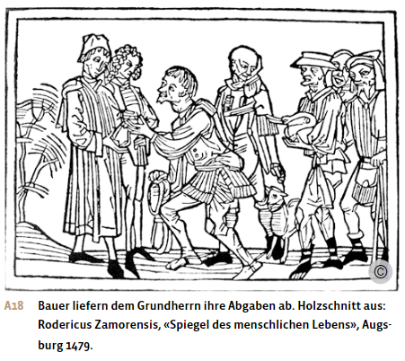
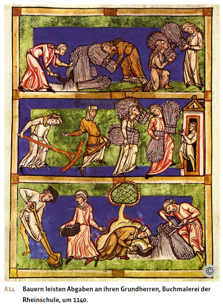
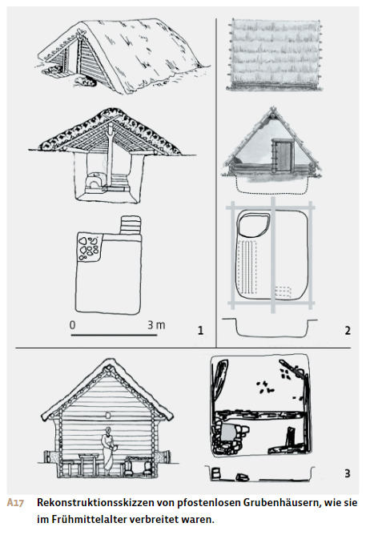
Die Erträge von Adel und König
Die Grundherren und Adligen hatten wesentlich bessere Lebensbedingungen als die von ihnen abhängigen Bauern. Gleichzeitig wurde ihr Leben durch den Zusammenbruch des Fernhandels und der Geldwirtschaft stark beeinträchtigt. Steuern konnten nur noch in Form von Naturalabgaben erhoben werden. Zudem waren sie auf die bescheidenen Erträge und handwerklichen Produkte ihrer eigenen Höfe angewiesen, da Märkte und Handel kaum noch existierten. Luxusgüter, wie sie etwa die römische Oberschicht in der Antike genossen hatten, gab es kaum mehr.
Dies galt auch für den König, der wegen des Fehlens einer Geldwirtschaft über keine zentrale Staatskasse verfügte, aus der er seine Beamten hätte bezahlen können. Die Macht der Könige beruhte also nicht mehr wie im römischen Reich auf einem Beamtenapparat, sondern weitgehend auf ihrem Grundbesitz.
Aus diesem Grund residierten die fränkischen Könige auch nicht an einem zentralen Hof in einer Hauptstadt. Denn es gab keine Städte mit einem Markt, der gross genug gewesen wäre, um einen ganzen Königshof zu ernähren. Stattdessen waren die Könige gezwungen, von den Erträgen ihrer Fronhöfe zu leben und diese abwechselnd zu besuchen. Auf den grossen, gut erschlossenen Fronhöfen des Königs entstand jeweils eine Pfalz, eine königliche Residenz. Diese war dazu bestimmt, den König und sein Gefolge, das aus bis zu 100 Personen und ebenso vielen Pferden bestand, für eine gewisse Zeit zu beherbergen und zu versorgen. Waren die Vorräte in einer Pfalz aufgebraucht, zog der König mit seinem Gefolge zur nächsten Pfalz weiter.
Dieses Reisekönigtum entsprang der wirtschaftlichen Notwendigkeit. Es diente aber auch dazu, dass der König den weit verstreuten fränkischen Adel aufsuchen und die Verhältnisse vor Ort prüfen und kontrollieren konnte.
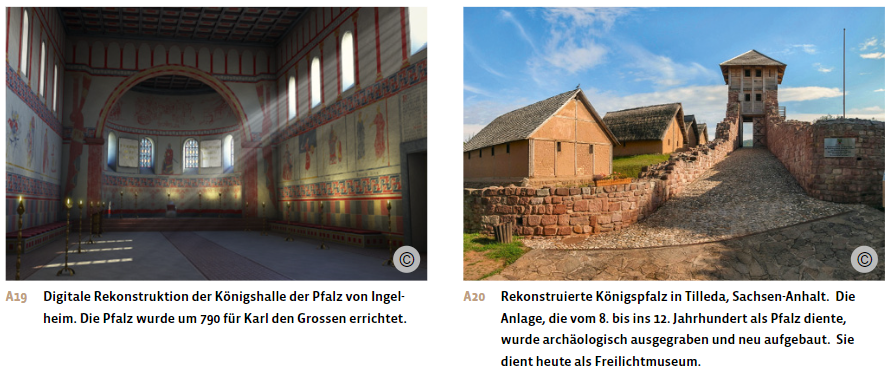
Aus: Notz, Thomas; Frey, Walter (Hg.): Geschichte fürs Gymnasium. Steinzeit bis 1450. Bern 2024, S. 245-258.